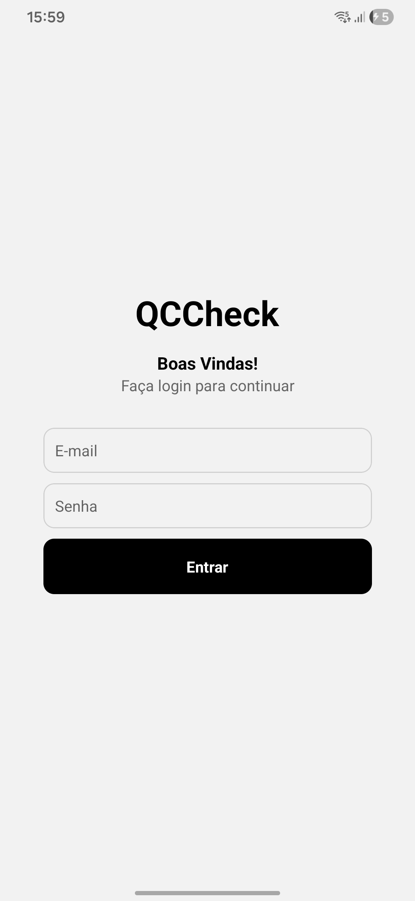
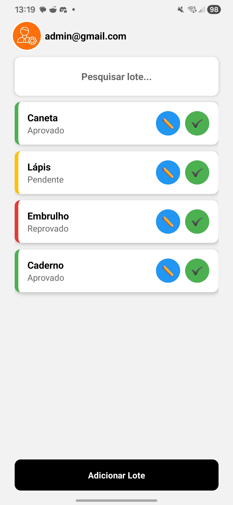
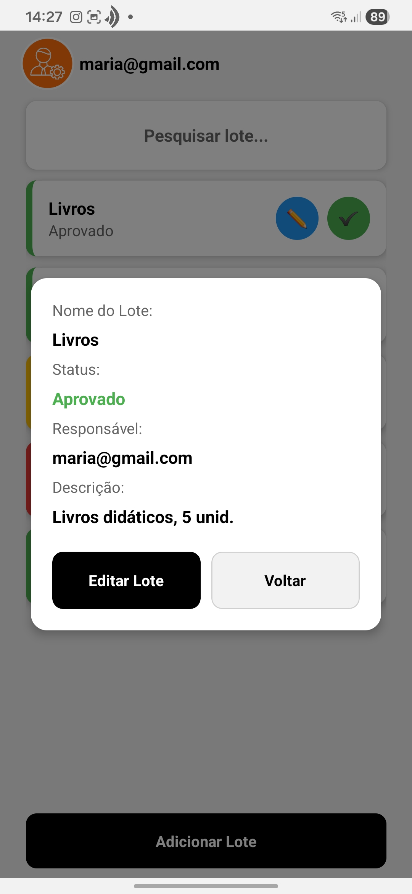
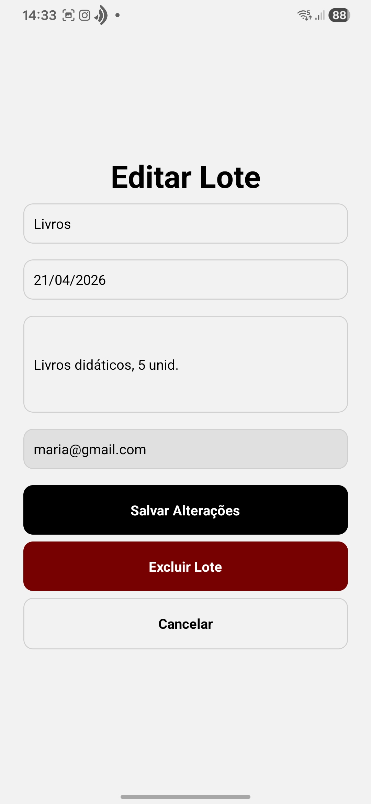
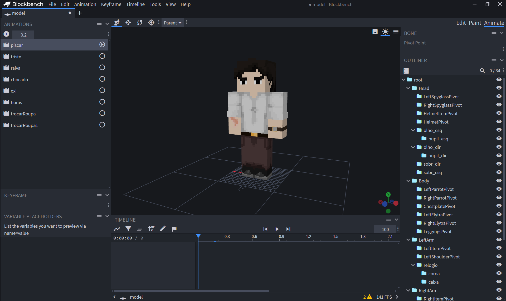
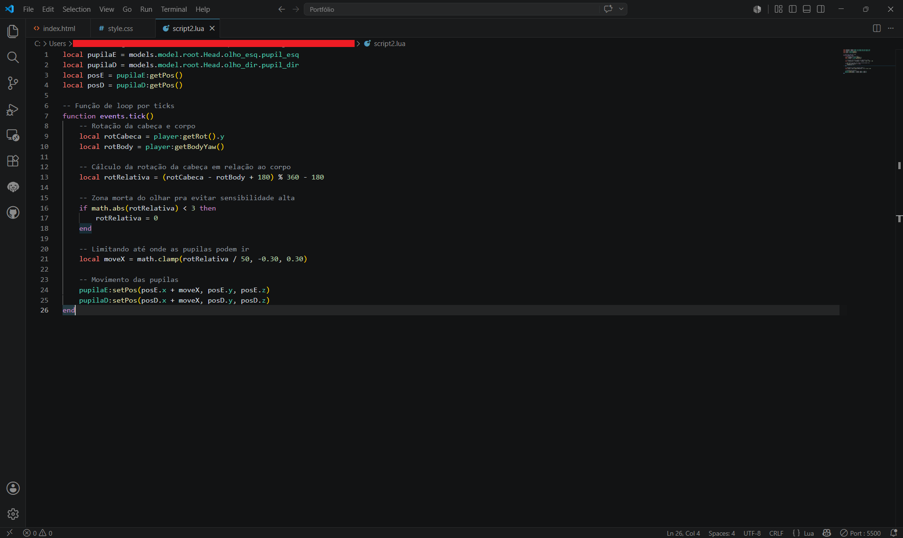

Projetos
QCCheck
O QCCheck é um aplicativo móvel desenvolvido por mim em conjunto com colegas durante a formação em tecnólogo voltado para a gestão e acompanhamento de lotes. Suas funções giram em torno do registro de informações como nomes, descrições e etc., indicando status e datas com facilidade, focando na produtividade e na entrega de uma excelente experiência final do usuário.




Servidor da Arara Vermelha
Um servidor de Minecraft com mods feito para a comunidade da streamer Arara Vermelha. A experiência me possibilitou desenvolver habilidades de administração, manutenção e otimização de servidores. Fui o responsável pela configuração e integração de mods para interagirem entre si, gerar construções gerais com WorldEdit e criar tarefas de manutenção, como reinício automático e limpeza de itens.
Servidor Pessoal
Em conjunto com amigos, fundei um servidor pessoal de Minecraft, atuando na administração e na configuração de maneira mais aprofundada, descobrindo novas possibilidades. Desenvolvi habilidades em interpretar mecânicas de jogo e como aplicar isso na otimização do servidor como o uso de memória RAM, o armazenamento e principalmente a interpretação de crash reports para solucionar problemas. Além disso, pude me aprofundar sobre a geração de mundos, desenvolvendo técnicas para resolver bugs e inconsistências.
Script de Skin Customizada
Me empolgando com o Minecraft, criei uma skin customizada para o meu personagem, utilizando dos conhecimentos obtidos nas experiências anteriores para fazer os scripts da skin. Configurei animações, trocas de texturas durante o jogo e funções de loops que interagem com o jogo. Na imagem está o código que escrevi para que as pupilas do personagem se movam de acordo com os movimentos da cabeça.


É isso!
Sou alguém que gosta de estudar e aprender algo novo constantemente, além de ser muito dedicado e gostar de ir até o final no que faço. Portanto, pretendo ter muitos outros projetos no futuro. Logo abaixo, você pode encontrar formas de entrar em contato comigo, caso tenha se interessado pelo meu trabalho.
Obrigado por visitar meu portfólio!